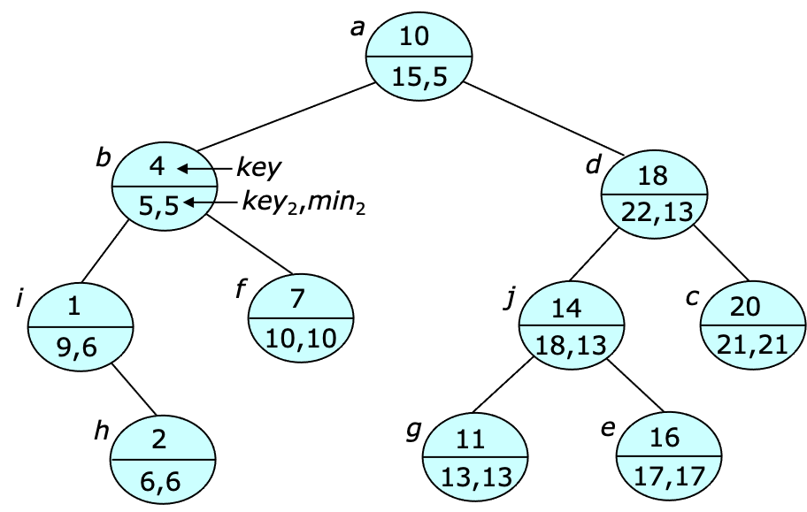

\(
\newcommand{\contains}{\texttt{contains}}
\newcommand{\lookup}{\texttt{lookup}}
\newcommand{\insert}{\texttt{insert}}
\newcommand{\delete}{\texttt{delete}}
\newcommand{\join}{\texttt{join}}
\newcommand{\split}{\texttt{split}}
\newcommand{\KeySets}{\texttt{KeySets}}
\newcommand{\DualKeySets}{\texttt{DualKeySets}}
\newcommand{\Map}{\texttt{Map}}
\newcommand{\get}{\texttt{get}}
\newcommand{\put}{\texttt{put}}
\newcommand{\deletePair}{\texttt{deletePair}}
\newcommand{\first}{\texttt{first}}
\newcommand{\next}{\texttt{next}}
\newcommand{\size}{\texttt{size}}
\newcommand{\BalancedForest}{\texttt{BalancedForest}}
\newcommand{\findmin}{\texttt{findmin}}
\newcommand{\limit}{\textit{limit}}
\newcommand{\left}{\textit{left}}
\newcommand{\key}{\textit{key}}
\newcommand{\Min}{\textit{min}}
\newcommand{\getPair}{\texttt{getPair}}
\)
Key Sets and Maps©
A key set is a set of items, each having a key from some
ordered universe of keys. It can be implemented efficiently using
a binary tree in which the infix order of the vertices is consistent
with the order of the keys.
Such a tree is called a binary search tree,
since one can quickly lookup an item with a specified key $k$ by
comparing $k$ to the key associated with a tree node $u$,
to determine which of $u$'s subtrees contains an item with key $k$.
A map is a collection of key-value pairs that allows one to
efficiently retrieve a value corresponding to a specified key,
and can be efficiently implemented using a key set.
The key sets data structure represents a collection of key sets,
and can be implemented using binary forest.
A typical implementation supports the following methods.
- $\contains(i,s)$ returns true if item $i$ is
contained in set $s$.
- $\lookup(k,s)$ returns an item $i$ in set
$s$ with key $k$, or 0 if there is no such item.
- $\insert(i,s)$ inserts item $i$ into set
$s$ and returns the modified set.
- $\delete(i)$ deletes an item $i$ from the set
containing it; upon return, $i$ is a singleton.
Some implementations also support the following methods.
- $\join(s_1,i,s_2)$ forms a larger set from a singleton
item $i$ and sets $s_1$ and $s_2$,
where $s_1$ is required to have keys $\leq\key(i)$
and $s_2$ is required to have keys $\geq\key(i)$.
- $\split(i)$ divides a set into three parts,
$s_1$ containing items with keys $\leq\key(i)$ and
$s_2$ containing items with keys
$\geq$$\key(i)$ and $i$.
Keys sets can be implemented by extending the
binary forest class
introduced earlier, or either of its balanced variants.
The provided Javascript implementation extends the
balanced forest
class and its core methods (omitting those inherited
from the $\BalancedForest$) are shown below.
Dual Key Sets
The dual key sets data structure is an extension of the key sets
data structure that includes a secondary key for each item $i$,
referred to as $\key_2(i)$.
The data structure is still organized principally around its primary
key values, but it also provides a method
$\findmin(limit)$ that returns an item of minimum
$\key_2$ value from among the items with primary key
values $\leq\limit$.
Hence, it can be viewed as a heap, with respect to the second key,
and it can be implemented in a way that is similar to that of the
ordered heaps
data structure.
In particular, it can use an auxiliary field $\Min_2(u)$ that gives
the smallest $\key_2$ value in the subtree of node $u$.
An example appears below.

The $\findmin$ operation can be implemented by
traversing the tree while comparing the $\key_1$ value to $\limit$.
A node is considered eligible if $\key_1\leq \limit$.
The eligible node with the smallest $\key_2$ value is referred to
as the target of the $\findmin$.
If a node $u$ is not eligible, the target cannot be in $u$'s
right subtree, so there is no need to search it.
On the other hand, if $u$ is eligible then every node in its
left subtree is also eligible and one can use the $\Min_2$
value of the subtree to determine its smallest $\key_2$ value.
As the search progresses, for each eligible node $u$ with
left child $l$, $b_2(u)=\min(\key_2(u),\Min_2(l))$ is computed
and the node on the path with the smallest $b_2$ value is
identified.
If $u$ has the smallest $c_2$ value when the search reaches
the leaf, then either $u$ is the target, or the target is in
$u$'s left subtree and can be quickly identified by a search
of the subtree using the just the $\Min_2$ values.
Note that rotation operations must be extended
to update $\Min_2$ value.
Also, $\insert$, $\delete$ and $\join$ must be
modified to update the $\Min_2$ values.
This can be done by traversing a
path from a node to the root, updating $\Min_2$ values along the way.
The provided Javascript implementation extends the
$\KeySets$ class, so all operations are $O(\log n)$.
The core methods are shown below.
Maps
A map defines a collection of key-value pairs and defines the
following methods.
- $\get(k)$ returns the value part of the key-value pair
with key $k$ or undefined.
- $\put(k,v)$ adds the key-value pair $[k,v]$,
possibly replacing an existing pair with key $k$.
The provided Javascript implementation also provides the following
methods.
- $\getPair(k)$ returns an integer index for the pair
with key $k$, or 0.
- $\deletePair(p)$ removes pair $p$
- $\first()$ returns first pair in the map.
- $\next(p)$ returns the pair following $p$.
- $\size$ is the number of pairs in the map.
A map can be implemented using a key set to represent the collection
of keys, with the values stored in a separate array.
Consequently, the main operations are all $O(\log n)$.
The provided implementation supports keys and values that are either numeric
or strings and its core components appear below.
References
- [Tarjan87]
- Network Algorithms and Data Structures by Robert E. Tarjan.
Society for Industrial and Applied Mathematics, 1987.
© Jonathan Turner - 2022